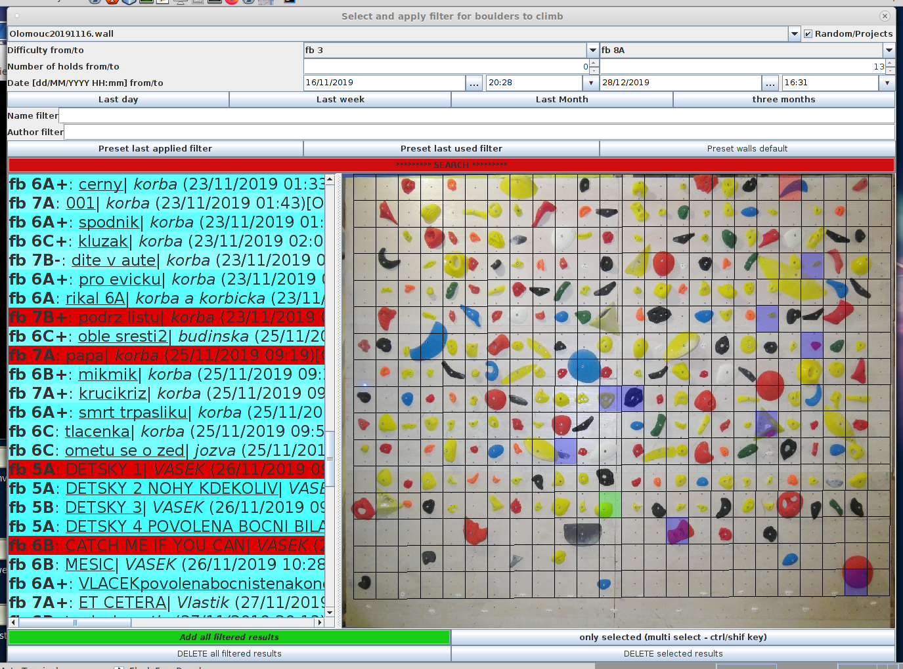

- Základní užití
- rychlí filter
- hudba
- navigace
- historie
- přímé skoky
- Pokročilé funkce
- skrolování
- vyvolání ||| menu =
- vlastní filtr
- multiselekt
- rychlé datum
- historie filtrů

Je obrazovka černá? Pouze se šetří, dotkni se jí a měl by si vidět ovládání stěny
|
|
Základní použití je přijít, pomocý "rychlého filtru" si zvolit svoji obtížnost a pomoci "předchozího/dalšího boulderu" tedy šipek << a >>si proklikávat bouldery. Autor,obtížnost a název jsou vždy vidět pod rychlím filtrem. Při kliku na název se vám zobrazí detajly, včetně převodů obtížnosti. Ale Free board toho umí mnohem více.
Samozřejmě někdo musí do databáze této stěny bouldery přidávat. A protože lidí kteří dělají nové bouldery je málo, jejich čas je šetřen tím, že tlačítko na nový boulder je vlevo nahoře. O samotné tvorbě nového boulderu později.
Pokud jsou u monotoru repráčky, můžete si přinést vlastní flash disk (občas to vezme i telefon) a pustit si k lezení svoji muziku. Bute ohleduplní, a nezneužívejte to k vyhnání ostatních lezců ze stěny.
Jakmile si pomocý "rychlého filtru"
 nastavíte obtížnost, zobrazí se nejnovější boulder dané obtížnosti a můžete zkoušet. Pomoci "předchozího/dalšího boulderu" tedy šipek << a >>si můžete proklikávat obsah filtrovaných problémů. Tlačítko random/náhoda skočí na náhodný boulder v aktuálním seznamu. Tlačítko ˇ/^ otevře/schová lištu navigace v historii.
nastavíte obtížnost, zobrazí se nejnovější boulder dané obtížnosti a můžete zkoušet. Pomoci "předchozího/dalšího boulderu" tedy šipek << a >>si můžete proklikávat obsah filtrovaných problémů. Tlačítko random/náhoda skočí na náhodný boulder v aktuálním seznamu. Tlačítko ˇ/^ otevře/schová lištu navigace v historii.
Historie ignoruje současný filtr a lze se skrze ni doklikat do boulderů z předchozích filtrů. Funguje to stejně jako historie v prohlížeči. Tlačítko Generovat vygeneruje náhodný boulder. Lezitlenost tohoto bolderu není zaručena! Ale občas je s nimi pořádná junda. Tyto bouldry lze uložit na disk, ale je to dřina :). Primárně zůstávají pouze v historii. Pokud chcete historii z nějakého důvodu vymazat, pak prostě apliakci zavřete (tím křížkem vpravo nahoře). Objeví se znova, ale bez historie
Pravé tlačítko myši/nebo ctrl+click na tlačítka navigace << , >> , < , > zobrazí menu pro přímí skok:
Jelikož tento list může být vlemi dlouhý, dá se v něm skrolovat polechtáním šipek nahoře/dole
 nebo takto:
nebo takto:
Přez dva kliky skrze menu ostatních funkcí a zvolení "vybrat/listovat bouldery" vyskočí strašidelný dialog který umožní přesně najít boulder. Zobrazeí dialogu vždy chvíly trvá, neboť se kontroluje centrální databáze stěny, aby byl k dizpozici vždy poslední seznam:
Okno se vždy zobrazí o velikosti stěny a na pozici toho kdo jej vyvolal. To aby se lépe orientovalo v dvojokením módu pro dva lezce
 poté se objeví vyfiltrovaný seznam. Tím je možné dále kliklat, a vždy se zobrazí náhled problému. Je dokonce možné pomocí ctrl nebo shift vybýrat skupiny boulderů!
poté se objeví vyfiltrovaný seznam. Tím je možné dále kliklat, a vždy se zobrazí náhled problému. Je dokonce možné pomocí ctrl nebo shift vybýrat skupiny boulderů!

Po tom co jste s filtrováním/výběrem spokojeni, je třeba zmáčknout nazelenalé Lézt filtrované bouldery. Filtrování se zavře, a butete moci lézt vybranou skupinu boulderů. Pokud jsi nějaký boulder i vybral (byl vidět v náhledu a jeho text svítil červeně), bude tento boulder vybrán. Pokud jse použili multiselect a chceš lízt pouze těch pár manuálně vybraných boulderů (nebo dokonce ten jeden jedinný, pracně nalezený, a nenechat se rušit jinými), je třeba zmáčknout šedo-modrý Lézt pouze vybrané bouldery
I když je volba datumu a času velmi přímočará Jsou pro vás nachystané ryhchlo výběry:
Nastavení plnohodnotného filtru je dřina. Proto si apliakce pamatuje poslední filtry:
Poslední aplikovaný - tedy kdy jste naposley klikli načervenalé HLEDAT, a poslední použitý, tedy kdy jste stiskly tlačítko nazelenalé Lézt filtrované bouldery nebo šedo-modrý Lézt pouze vybrané bouldery. Okno výběru boulderu je vždy nastartováno s maximálním možnm rozsahem. Toto se dá obnovit pomocí nastavit na vše dané stěny
Pozor, historie filtrů se sdílí mezi okny paralelně lezoucích lezců! Ale zase přetrvá zavření aplikace.